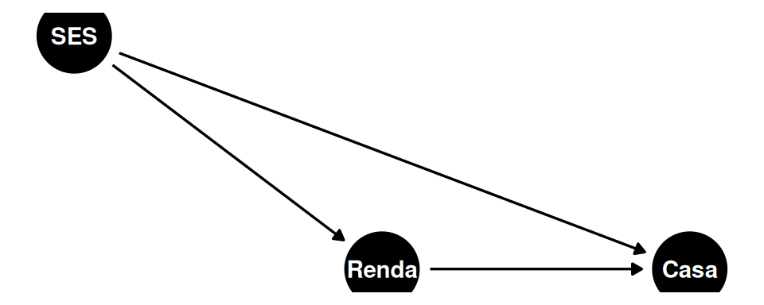
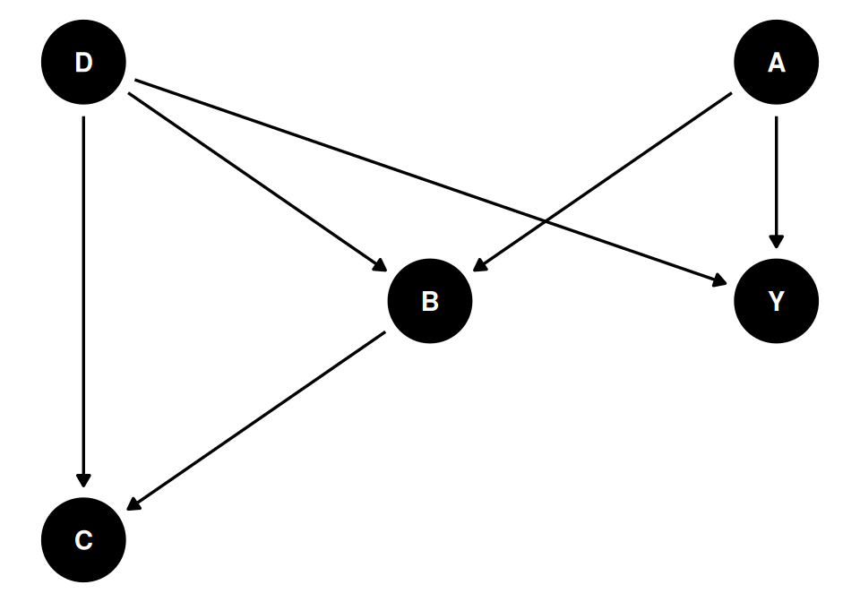
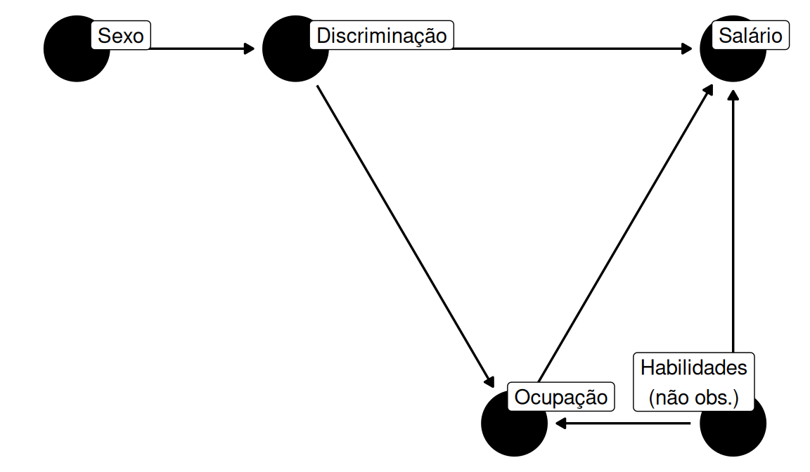
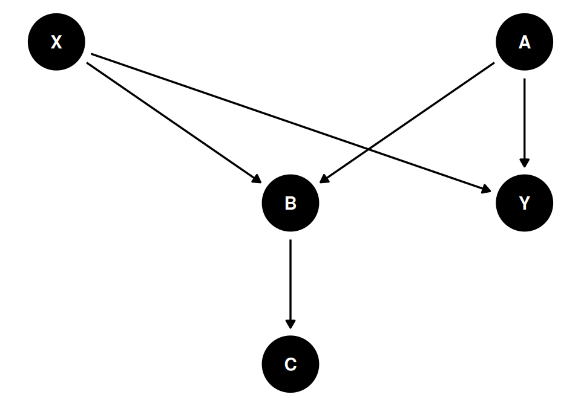
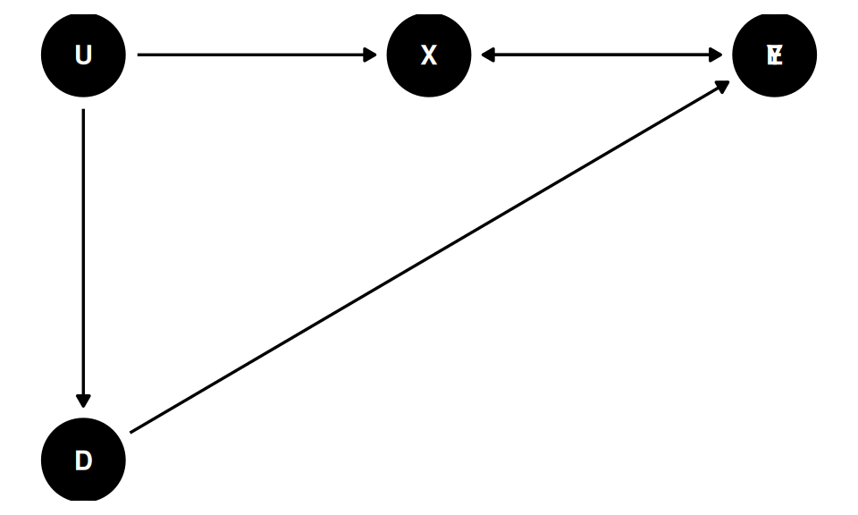
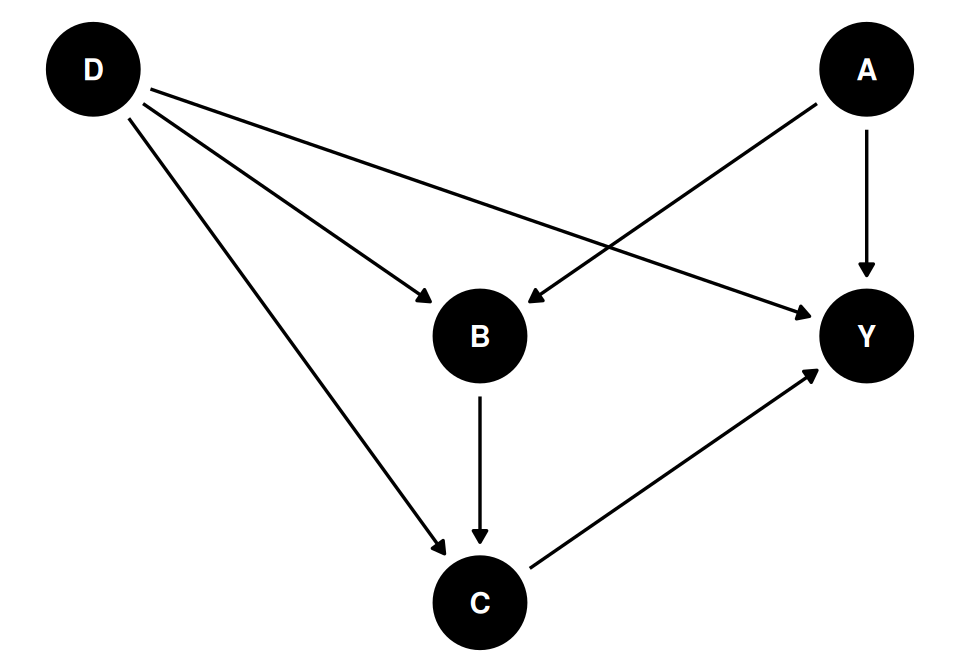
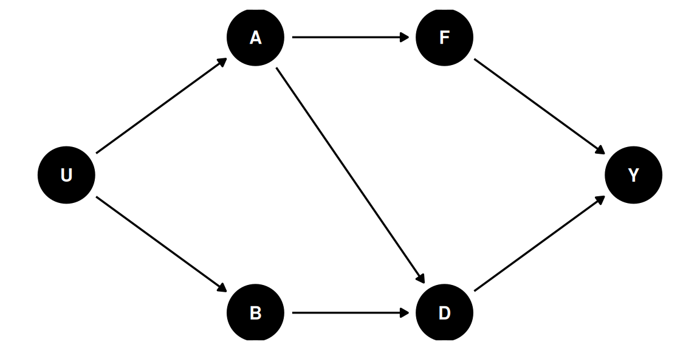

Code
dag_ses <- dagify(
Renda ~ SES,
Casa ~ Renda + SES,
coords = list(
x = c(SES = 0, Renda = 1, Casa = 2),
y = c(SES = 1, Renda = 0, Casa = 0)
)
)
ggdag(dag_ses) + theme_dag()
Toda a parte de DAG é uma manipulação de probabilidades conjuntas e condicionais. É uma forma de escrever equações \(P(X|Y) \times P(Y)\). Só que o Judea Pearl percebeu que você consegue, sem entrar nessa notação formal, resolver quase que as mesmas coisas mas graficamente. Não falaremos muito da notação formal, mas no Causal Inference in Statistics: a Primer, do próprio Judea Pearl, entramos em mais detalhes sobre isso.
Suponha o seguinte DAG:
dag_ses <- dagify(
Renda ~ SES,
Casa ~ Renda + SES,
coords = list(
x = c(SES = 0, Renda = 1, Casa = 2),
y = c(SES = 1, Renda = 0, Casa = 0)
)
)
ggdag(dag_ses) + theme_dag()
Aqui, estamos dizendo que casa ~ renda + SES. Se fazemos simplesmente casa ~ renda, o efeito de renda está contaminado por SES. Afinal, tudo que não especificamos na regressão vira resíduo.
Na prática, se parcializarmos a renda pelo que é explicado pelo SES, conseguimos ir “eliminando caminhos”, ou “cortar setas”.
O problema é que parcializar, na vida, é essencialmente impossível. O controle por variáveis, portanto, é uma assumption muito forte. É impossível representar todos os caminhos causais com muita certeza.
Controlando por variáveis, conseguimos uma versão parcializada. Mas o fato de que fizemos isso com SES em relação à renda não significa que removemos todas as setas. Suponha, por exemplo, que cor/raça esteja ligando as duas coisas. Então a parcialização não é suficiente.
Uma coisa é \(P(Y|X)\) e outra é \(P(Y|\text{do}(X))\). A primeira pode ser endógena, enquanto a segunda é necessariamente causal. \(\text{do}(X)\) significa que algo foi forçado.
Usualmente, queremos explicar \(Y\) como função de mais de uma variável, por exemplo \(Y = \beta_0 + \beta_1 x + \beta_2 w + \epsilon\). \(\beta_1\) é o efeito parcial de \(x\) controlado por \(w\).
Regressão simples (1): queremos o resíduo \(\hat{\epsilon}_y = y - (a_0 + a_1 w)\)
Regressão simples (2): queremos o resíduo \(\hat{\epsilon}_x = x - (c_0 + c_1 w)\)
A regressão parcial combina as duas coisas:
\[ \hat{\epsilon}_y = b_0 + b_1 \hat{\epsilon}_x \]
Essa regressão acima, sem controles, na verdade já está controlada, porque de saída removemos de \(y\) a parte explicada de \(w\) — e fizemos o mesmo com \(x\). Isso significa, em essência, que \(\beta_1 = b_1\).
Considere o seguinte DAG:
dag_ex1 <- dagify(
D ~ A + B,
F ~ A,
Y ~ F + D,
A ~ U,
B ~ U,
coords = list(
x = c(U = 0, A = 1, B = 1, F = 2, D = 2, Y = 3),
y = c(U = 0, A = 1, B = -1, F = 1, D = -1, Y = 0)
)
)
ggdag(dag_ex1) + theme_dag()
Os caminhos causais de \(D\) até \(Y\) são:
Pergunta: como tirar a parte de \(D\) que é explicada por \(A\) e \(B\)? Ou seja, como remover a relação de \(D\) com \(A\) e \(B\) — os backdoors?
\[ Y = \beta_0 + \beta_1 D + \beta_2 A + \beta_3 B \]
“Parcializar é cortar caminhos. Parcializar é controlar por variáveis. Logo, controlar por variáveis é cortar caminhos.”
Ao controlar, estamos bloqueando backdoors.
Se controlarmos por \(F\), também estaremos controlando pelas coisas em (2). Logo, as cadeias (2) e (3) estão interrompidas, sobrando apenas (1):
\[ Y = \alpha_0 + \alpha_1 D + \alpha_2 F \]
Nesse caso, temos algumas regressões equivalentes — todas deveriam revelar o mesmo efeito de \(D\):
\[ Y \sim D + A \qquad Y \sim D + A + F \qquad Y \sim D + F + B \] \[ Y \sim D + F \qquad Y \sim D + A + B \qquad Y \sim D + A + F + B \]
Em essência, todas essas funções deveriam revelar o mesmo efeito de \(D\). Se um efeito é diferente dos demais, o diagrama foi invalidado.
Vamos lembrar das relações triádicas:
| Estrutura | Tipo | Status do caminho |
|---|---|---|
| \(X \rightarrow M \rightarrow Y\) | Cadeia (chain) | Aberto; fecha ao controlar por \(M\) |
| \(X \leftarrow C \rightarrow Y\) | Bifurcação (fork) | Aberto; fecha ao controlar por \(C\) |
| \(X \rightarrow C \leftarrow Y\) | Colisão (collider) | Já fechado; abre ao controlar por \(C\) |
Controlar por um collider abre um caminho antes inexistente.
Na tríade \(X \rightarrow C \leftarrow Y\), \(X \perp Y\): são ortogonais, independentes. Controlar por \(C\) cria uma associação espúria entre \(X\) e \(Y\).
set.seed(42)
n <- 100000
x <- rnorm(n)
y <- rnorm(n)
c <- 2 * x + 1.5 * y + rnorm(n) + 10
m1 <- lm(y ~ x) # zero efeitos
m2 <- lm(y ~ x + c) # efeitos criados pelo collider
summary(m1)$coefficients["x", ] Estimate Std. Error t value Pr(>|t|)
-0.002855772 0.003159365 -0.903906787 0.366047007 summary(m2)$coefficients["x", ] Estimate Std. Error t value Pr(>|t|)
-9.263904e-01 2.620265e-03 -3.535483e+02 0.000000e+00 Em m1, o efeito de \(x\) sobre \(y\) é essencialmente zero. Em m2, ao controlar por \(c\) (o collider), criamos um efeito espúrio.
Seja \(\tilde{X} = x - (\alpha_0 + \alpha_1 c)\) e \(\tilde{Y} = y - (\delta_0 + \delta_1 c)\). Então:
\[ \text{cov}(\tilde{X}, \tilde{Y}) = \text{cov}(x - \alpha_1 c,\; y - \delta_1 c) \]
\[ = \underbrace{\text{cov}(x, y)}_{= 0} + \text{cov}(x, -\delta_1 c) + \text{cov}(-\alpha_1 c, y) + \text{cov}(-\alpha_1 c, -\delta_1 c) \]
\[ = -\gamma_1\,\text{cov}(x, c) - \delta_1\,\text{cov}(c, y) + \alpha_1 \delta_1\,\text{var}(c) \neq 0 \]
É nesse sentido que controlar por um collider cria um caminho antes inexistente: em princípio parecia que estávamos removendo \(c\), mas como \(c\) não estava lá desde o início, acabamos incluindo-o.
Estamos olhando para relações lineares, mas isso vale para quaisquer especificações funcionais.
dag_ex2 <- dagify(
Y ~ D + A,
B ~ D + A,
C ~ D + B,
coords = list(
x = c(D = 0, A = 2, B = 1, C = 0, Y = 2),
y = c(D = 1, A = 1, B = 0, C = -1, Y = 0)
)
)
ggdag(dag_ex2) + theme_dag()
Caminhos causais (\(D \rightarrow Y\)):
Mínimos controles necessários: \(Y \sim D + A\), ou mesmo nenhum.
Simulação:
set.seed(42)
n <- 10000
D <- rnorm(n)
A <- rnorm(n)
B <- D + A + rnorm(n)
C <- D + B + rnorm(n)
Y <- D + A + rnorm(n)dag_ex3 <- dagify(
D ~ G,
S ~ D + O + H,
O ~ D + H,
latent = "H",
labels = c(
G = "Sexo", D = "Discriminação",
S = "Salário", O = "Ocupação",
H = "Habilidades\n(não obs.)"
),
coords = list(
x = c(G = 0, D = 1, O = 2, S = 3, H = 3),
y = c(G = 0, D = 0, O = -1, S = 0, H = -1)
)
)
ggdag(dag_ex3, use_labels = "label", text = FALSE) + theme_dag()
Caminhos causais (\(G \rightarrow S\)):
Mínimos controles necessários: nenhum. \(S \sim D\).
Se controlo pelo collider, abro o caminho. Mas se controlo por uma variável que vem depois do collider (por exemplo, \(H\), se fosse observável), o caminho fecha novamente.
Em (1), se controlo por \(D\), corto todas as setas.
dag_ex5 <- dagify(
Y ~ X + A,
B ~ X + A,
C ~ B,
coords = list(
x = c(X = 0, A = 2, B = 1, C = 1, Y = 2),
y = c(X = 1, A = 1, B = 0, C = -1, Y = 0)
)
)
ggdag(dag_ex5) + theme_dag()
Caminhos causais (\(X \rightarrow Y\)):
Mínimos controles: nenhum.
O que acontece se controlarmos por \(C\)? Afinal, \(\text{cov}(C, B) \neq 0\). De fato, \(C\) é causado por \(B\), logo \(C = a_0 + a_1 B\). Por isso, controlar por \(C\) é análogo a controlar por \(B\):
\[ Y \sim X + C \iff Y \sim X + B \]
Equação viesada de interesse:
\[ \text{(1)}\quad Y = \beta_0 + \underbrace{\beta_1 X + \beta_2 B}_{\text{viesado}} \]
\[ \text{(2)}\quad Y = \beta_0 + \beta_1 X + \beta_3 C + \varepsilon \]
Substituindo \(C = a_0 + a_1 B + U\):
\[ = (\beta_0 + \beta_3 a_0) + \beta_1 X + \beta_3 a_1 B + (\beta_3 U + \varepsilon) \]
O viés introduzido ao controlar pelo descendente \(C\) é análogo ao viés de controlar pelo próprio collider \(B\).
dag_ex6 <- dagify(
X ~ U + E,
Y ~ X + D,
D ~ U,
coords = list(
x = c(U = 0, E = 2, X = 1, D = 0, Y = 2),
y = c(U = 0, E = 0, X = 0, D = -1, Y = 0)
)
)
ggdag(dag_ex6) + theme_dag()
Caminhos causais (\(D \rightarrow Y\)):
Colliders: \(X\) (filho de \(U\) e \(E\)). Filhos de collider: \(\emptyset\) (\(Y\) é nossa variável de interesse).
Mínimos controles: não é possível identificar o efeito causal.
dag_ex7 <- dagify(
Y ~ D + A + C,
B ~ D + A,
C ~ D + B,
coords = list(
x = c(D = 0, A = 2, B = 1, C = 1, Y = 2),
y = c(D = 1, A = 1, B = 0, C = -1, Y = 0)
)
)
ggdag(dag_ex7) + theme_dag()
Caminhos causais (\(D \rightarrow Y\)):
Mínimos controles:
Colliders e seus filhos: \(\{B, C\}\) — filhos estão desconectados dos caminhos causais. Mas, na verdade, é possível controlar por \(A\) e fechar o caminho que se abriu:
\[ Y \sim \boxed{D} + C + A \quad \rightarrow \quad \text{efeito causal direto} \]
Considere \(E \rightarrow O \rightarrow S\) (com \(E \rightarrow S\) também):
Dizemos que duas variáveis estão d-separadas quando todos os caminhos entre elas forem bloqueados.
Exemplos:
Independências condicionais implicadas: \(A \perp\!\!\!\perp D \mid B, C\)
ggdag(dag_ex1) + theme_dag()
Caminhos causais (\(D \rightarrow Y\)):
Colliders: \(\emptyset\). Ajustes mínimos: \(\{F, A\}\).
Independências condicionais implicadas:
\[ B \perp\!\!\!\perp Y \mid D, A \qquad Y \perp\!\!\!\perp B \mid D, F \qquad F \perp\!\!\!\perp B \mid A \qquad \cdots \]
Quando eu desenho um DAG, ele me dá o significado das relações e as implicações observáveis. As independências condicionais são testáveis nos dados — e é isso que nos permite validar ou invalidar um modelo causal.